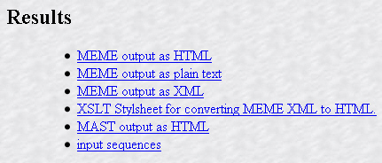
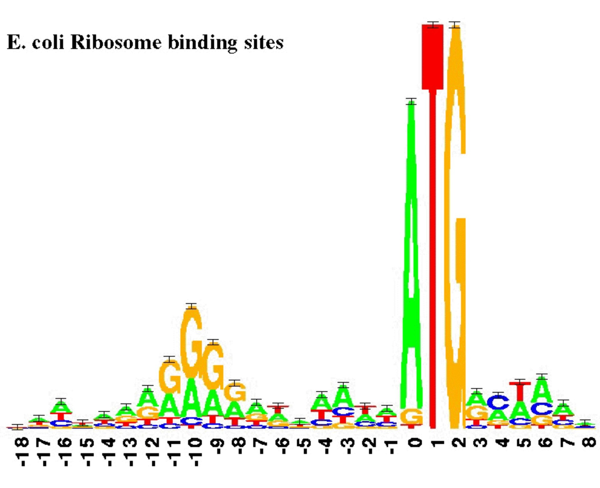

Motifs: Using Databases & Creating Your Own
Searching Motif Databases
Background Information: Proteins having related functions may not show overall high homology yet may contain sequences of amino acid residues that are highly conserved. For background information on this see PROSITE at ExPASy. N.B. I recommend that you check your protein sequence with at least two different search engines. Alternatively, use a meta site such as MOTIF (GenomeNet, Institute for Chemical Research, Kyoto University, Japan) to simultaneously carry out Prosite, Blocks, ProDom, Prints and Pfam search
Several great sites including the first four which are meta sites:
- Motif Scan – (MyHits, SIB, Switzerland) includes Prosite, Pfam and HAMAP profiles.
- InterPro 5 - includes PROSITE, HAMAP (High-quality Automated and Manual Annotation of Proteins), Pfam (protein Families), PRINTS, ProDom, SMART (a Simple Modular Architecture Research Tool), TIGRFAMs, PIRSF (Protein Information Resource), SUPERFAMILY, CATH-Gene3D (Class, Architecture, Topology, Homologous superfamily), and PANTHER (Protein ANalysis THrough Evolutionary Relationships) classification systems.
(Reference: Jones, P. et al. 2014, Bioinformatics 10: 1093).
This service is also available here. - MOTIF (GenomeNet, Japan) - I recommend this for the protein analysis, I have tried phage genomes against the DNA motif database without success. Offers 6 motif databases and the possibility of using your own.
- CDD or CD-Search (Conserved Domain Databases) - (NCBI) includes CDD, Smart,Pfam, PRK, TIGRFAM, COG and KOG and is invoked when one uses BLASTP.
- Batch Web CD-Search Tool - The Batch CD-Search tool allows the computation and download of conserved domain annotation for large sets of protein queries. Input up to 100,000 protein query sequences as a list of sequence identifiers and/or raw sequence data, then download output in a variety of formats (including tab-delimited text files) or view the search results graphicallyOn the Batch CD-Search job summary page, a "Browse Results" button above the sample data table allows you to view the results graphically. The button opens a separate browser window that shows the domain footprints, alignment details, and conserved features on any individual query sequence.
(Reference: Marchler-Bauer A et al. 2011. Nucleic Acids Res.39: (D)225-229.)
- Batch Web CD-Search Tool - The Batch CD-Search tool allows the computation and download of conserved domain annotation for large sets of protein queries. Input up to 100,000 protein query sequences as a list of sequence identifiers and/or raw sequence data, then download output in a variety of formats (including tab-delimited text files) or view the search results graphicallyOn the Batch CD-Search job summary page, a "Browse Results" button above the sample data table allows you to view the results graphically. The button opens a separate browser window that shows the domain footprints, alignment details, and conserved features on any individual query sequence.
- CDvist - Comprehensive Domain Visualization Tool - CDvist is a sequence-based protein domain search tool. It combines several popular algorithms to provide the best possible domain coverage for multi-domain proteins delivering speed-up, accuracy, and batch querying with novel visualization features.
(Reference: O. Adebali et al. Bioinformatics (2015) 31(9):1475-7). - Pfam - (EMBL-EBI) while for Batch Pfam searches go here or here.
(Reference: Punta M et al. 2012. Nucl. Acids Res. 40(Database issue): D290–D301).
One can access it also via the EBI site here which allows queries of Pfam, TIGRFAM, Gene3D, Superfamily, PIRSF, and TreeFam. - ScanProsite – (ExPASy)
(Reference: Sigrist CJ et al. Nucleic Acids Res. 2013; 41(Database issue): D344-7). - ProDom (Pôle Rhone-Alpin de BioInformatique, France) - is a comprehensive set of protein domain families automatically generated from the UniProt Knowledge Database
- SMART Simple Modular Architecture Research Tool (EMBL, Universitat Heidelberg) - searches sequence for the domains/ sequences listed in the homepage. Try selecting/deselecting the default settings.
- Batch SMART scan - can be found here. Please note that the software produces a polyprotein which it analyzes. This can result in some difficulty in correlating the motifs which the individual proteins. The same proviso applies to the Batch CD search.
- iProClass (Protein Information Resource, Georgetown University Medical Centre, U.S.A.) - is an integrated resource that provides comprehensive family relationships and structural/functional features of proteins.
(Reference: Wu CH et al. Comput. Biol. Chem. (2004) 28: 87–96). - PSIPRED Protein Sequence Analysis Workbench - includes PSIPRED v3.3 (Predict Secondary Structure); DISOPRED3 & DISOPRED2 (Disorder Prediction); pGenTHREADER (Profile Based Fold Recognition); MEMSAT3 & MEMSAT-SVM (Membrane Helix Prediction); BioSerf v2.0 (Automated Homology Modelling); DomPred (Protein Domain Prediction); FFPred 3 (Eukaryotic Function Prediction); GenTHREADER (Rapid Fold Recognition); MEMPACK (SVM Prediction of TM Topology and Helix Packing) pDomTHREADER (Fold Domain Recognition); and, DomSerf v2.0 (Automated Domain Modelling by Homology).
(Reference: Buchan DWA et al. 2013. Nucl. Acids Res. 41 (W1): W340-W348). - P2RP (Predicted Prokaryotic Regulatory Proteins) - including transcription factors (TFs) and two-component systems (TCSs) based upon analysis of DNA or protein sequences.
(Reference: Barakat M., 2013. BMC Genomics 14: 269) - MEROPS - permits one to screen protein sequences against an extensive database of characterized peptidases
(Reference: Rawlings, N.D et al. (2018) Nucleic Acids Res. 46: D624-D632).
For specific protein modifications or site detection consult the following sites:
Orthologous genes/proteins:
COG analysis - Clusters of Orthologous Groups - COG protein database was generated by comparing predicted and known proteins in all completely sequenced microbial genomes to infer sets of orthologs. Each COG consists of a group of proteins found to be orthologous across at least three lineages and likely corresponds to an ancient conserved domain (CloVR) . Sites which offer this analysis include:
- WebMGA
(Reference: S. Wu et al. 2011. BMC Genomics 12:444),
RAST
(Reference: Aziz RK et al. 2008. BMC Genomics 9:75),
and BASys (Bacterial Annotation System;
(Reference: Van Domselaar GH et al. 2005. Nucleic Acids Res. 33(Web Server issue):W455-459.)
and JGI IMG (Integrated Microbial Genomes;
(Reference: Markowitz VM et al. 2014. Nucl. Acids Res. 42: D560-D567. )
Other Sites
- EggNOG - A database of orthologous groups and functional annotation that derives Nonsupervised Orthologous Groups (NOGs) from complete genomes, and then applies a comprehensive characterization and analysis pipeline to the resulting gene families.
(Reference: Powell S et al. 2014.Nucleic Acids Res. 42 (D1): D231-D239) - OrthoMCL - is another algorithm for grouping proteins into ortholog groups based on their sequence similarity. The process usually takes between 6 and 72 hours.
(Reference: Fischer S et al. 2011. Curr Protoc Bioinformatics; Chapter 6:Unit 6.12.1-19). - KAAS (KEGG Automatic Annotation Server) provides functional annotation of genes by BLAST or GHOST comparisons against the manually curated KEGG GENES database. The result contains KO (KEGG Orthology) assignments and automatically generated KEGG pathways.
(Reference: Moriya Y et al. 2007. Nucleic Acids Res. 35(Web Server issue):W182-185). - InParanoid - this database provides a user interface to orthologs inferred by the InParanoid algorithm. As there are now international efforts to curate and standardize complete proteomes, we have switched to using these resources rather than gathering and curating the proteomes themselves.
(Reference: E.L.L. Sonnhammer & G. Östlund. 2015. Nucl. Acids Res. 43 (D1): D234-D239).
DNA binding - motifs:
- GYM - the most recent program for analysis of helix-turn-helix motifs in proteins. N.B. the next site dates from 1990.
(Reference: Narasimhan, G. et al. 2002. J. Computational Biol. 9:707-720) - Helix-turn-Helix Motif Prediction - (Institut de Biologie et Chemie des Proteines, Lyon, France)
- iDNA-Prot - identifies DNA-binding proteins via the “grey model” and by adopting the random forest operation engine.The overall success rate by iDNA-Prot was 83.96%. One can submit up to 50 proteins.
(Reference: Lin W-Z et al. 2011. PLoS One 6: e24756).
Also available here. - DP-Bind: a web server for sequence-based prediction of DNA-binding residues in DNA-binding proteins. Choose: PSSM-based encoding which is the most accurate, but the slowest.
(Reference: S.Hwang et al. 2007. Bioinformatics 23(5):634-636). - DNAbinder - employs two approaches to predict DNA-binding proteins (a) amino acid composition which allows for multiple sequences in fasta format, and (b) PSSM (Position-specific scoring matrix) which can only screen a single protein at a time. Choose the "Alternate dataset" if input sequence is full length protein, since the prediction will be done using SVM modules developed using full length protein sequences
(Reference: M. Kumar et al. 2007. BMC Bioinformatics 8: 463). - DRNApred - server provides sequence based prediction of DNA- and RNA-binding residues.
(Reference: Yan J, & Kurgan LA, 2017. Nucleic Acids Res. 45(10):e84). - DisoRDPbind - predicts the RNA-, DNA-, and protein-binding residues located in the intrinsically disordered regions. DisoRDPbind is implemented using a runtime-efficient multi-layered design that utilizes information extracted from physiochemical properties of amino acids, sequence complexity, putative secondary structure and disorder, and sequence alignment.
(Reference: Peng Z, & Kurgan LA, 2015. Nucleic Acids Res. 43(18): e121). - If you know the three-dimensional structure of your protein then 3D-footprint, DISPLAR
(Reference: Tjong G & Zhou H-X. 2007. Nucl. Acid Res.35: 1465-1477),
iDBPs
(Reference: Nimrod G. et al. 2009. J. Mol. Biol. 387: 1040-1053),
DNABIND
(Reference: Szlagyi A & Skolnick J. 2006. J. Mol. Biol. 358: 922-933);
and, DNABINDPROT
(Reference: Ozbek P et al. 2010. Nucl. Acids Res. 38: W417-423)
could be useful to you. - 2ZIP - is used to find leucine zipper motifs
(Reference: Bornberg-Bauer,E. et al. (1998) Nucleic Acids Res. 26:2740-2746). - FeatureP - is a web server which launches a selection of such predictors and mines their outputs for differential predictions, i.e. features which are predicted to be modified as a consequence of the differences between the input sequences.
(Reference: Blicher T et al. (2010) Curr Opin Struct Biol. 20: 335-41).
Can be used to screen multiple proteins.
Two-component and other regulatory proteins:
- P2RP (Predicted Prokaryotic Regulatory Proteins) - users can input amino acid or genomic DNA sequences, and predicted proteins therein are scanned for the possession of DNA-binding domains and/or two-component system domains. RPs identified in this manner are categorised into families, unambiguously annotated.
(Reference: Barakat M, et al. 2013. BMC Genomics 14:269). - P2CS (Prokaryotic 2-Component Systems) is a comprehensive resource for the analysis of Prokaryotic Two-Component Systems (TCSs). TCSs are comprised of a receptor histidine kinase (HK) and a partner response regulator (RR) and control important prokaryotic behaviors. It can be searched using BLASTP.
(Reference: P. Ortet et al. 2015. Nucl. Acids Res. 43 (D1): D536-D541). - ECFfinder - extracytoplasmic function (ECF) sigma factors - the largest group of alternative sigma factors - represent the third fundamental mechanism of bacterial signal transduction, with about six such regulators on average per bacterial genome. Together with their cognate anti-sigma factors, they represent a highly modular design that primarily facilitates transmembrane signal transduction.
(Reference: Staron A et al. (2009) Mol Microbiol 74(3): 557-581).
Epitopes
- SEPPA 3.0 (Spatial Epitope Prediction of Protein Antigens) - B-cell epitope information is critical to immune therapy and vaccine design. Protein epitopes can be significantly affected by glycosylation, which SEPA can identify.
(Reference: Zhou C et al. 2019. Nucleic Acids Res. 47(W1): W388–W394). - BepiPred - this server predicts the location of linear B-cell epitopes using a combination of a hidden Markov model and a propensity scale method.
(Reference: Pontoppidan Larsen, J.E. et al. 2006. Immunome Research 2:2). - ABCpred - this server predicts B cell epitope(s) in an antigen sequence, using artificial neural network.
(Reference: Saha, S & Raghava G.P.S. 2006. Proteins 65:40-48). - Antibody Epitope Prediction (Immune Epitope Database and Analysis Resource) - methods include Chou & Fasman Beta-Turn Prediction, Emini Surface Accessibility Prediction, Karplus & Schulz Flexibility Prediction, Kolaskar & Tongaonkar Antigenicity, Parker Hydrophilicity Prediction and Bepipred Linear Epitope Prediction
- BCPREDS server allows users to choose the method for predicting B-cell epitopes among several developed prediction methods: AAP method, BCPred and FBCPred. Users provide an antigen sequence and optionally can specify desired epitope length and specificity threshold. Results are returned in several user-friendly formats.
(Reference: EL-Manzalawy, Y. et al. 2008. J Mol Recognit 21: 243-255). - EpiSearch: Mapping of Conformational Epitopes
(Reference: Negi, S.S. & Braun, W. 2009. Bioinform. Biol. Insights 3: 71-81). - CEP - Conformational Epitope Prediction Server - The algorithm, apart from predicting conformational epitopes, also predicts antigenic determinants and sequential epi-topes. The epitopes are predicted using 3D structure data of protein antigens, which can be visualized graphically. The algorithm employs structure-based Bioinformatics approach and solvent accessibility of amino acids in an explicit manner. Accuracy of the algorithm was found to be 75% when evaluated using X-ray crystal structures of Ag–Ab complexes available in the PDB.
(Reference: Kulkarni-Kale, U. et al. 2005. Nucl. Acids Res. 33: W168–W171) - IEDB (Immune Epitope Database and Analysis Resource). Includes T Cell Epitope Prediction (Scan an antigen sequence for amino acid patterns indicative of: MHC I Binding, MHC II Binding, MHC I Processing (Proteasome,TAP), MHC I Immunogenicity); B Cell Epitope Prediction, Predict linear B cell epitopes using: Antigen Sequence Properties, Predict discontinuous B cell epitopes using antigen structure via: Solvent-accessibility (Discotope), Protrusion (ElliPro).
(Reference: Vita, R. et al. 2015. Nucl. Acids Res. 43 (D1): D405-D412). - Expitope - is the first web server for assessing epitope sharing when designing new potential lead targets. It enables the users to find all known proteins containing their peptide of interest. The web server returns not only exact matches, but also approximate ones, allowing a number of mismatches of the users choice. For the identified candidate proteins the expression values in various healthy tissues, representing all vital human organs, are extracted from RNA Sequencing (RNA-Seq) data as well as from some cancer tissues as control.
(Reference: Haase K et al. 2015. Bioinformatics 31: 1854-1856). - EpiToolKit - provides a collection of methods from computational immunology for the development of novel epitope-based vaccines including HLA ligand or potential T-Cell epitope prediction, an epitope selection framework for vaccine design, and a method to design optimal string-of-beads vaccines. Additionally, EpiToolKit provides several other tools ranging from HLA typing based on NGS data, to prediction of polymorphic peptides.
(Reference: Schubert B et al. 2015. Bioinformatics 31: 2211-2213). - MetaPocket 2.0 is a meta server to identify ligand binding sites on protein surface! metaPocket is a consensus method, in which the predicted binding sites from eight methods: LIGSITEcs, PASS, Q-SiteFinder, SURFNET, Fpocket, GHECOM, ConCavity and POCASA are combined together to improve the prediction success rate.
(Reference: Bingding Huang (2009) Omics, 13(4): 325-330)
Post-translational modification
- ProteomeScout is a database of proteins and post-translational modifications. There are two main data types in ProteomeScout: 1) Proteins: Visualize proteins or annotate your own proteins; and, 2) Experiments: You can load a new experiment or browse and analyze an existing experiment. Requires registration
(Reference: M.K. Matlock et al. 2015. Nucl. Acids Res. 43 (D1): D521-D530).
Glycosylation:
- NetOGlyc (Center for Biological Sequence Analysis, Technical University of Denmark) - produces neural network predictions of mucin type GalNAc O-glycosylation sites in mammalian proteins. SignalP is automatically run on all sequences. A warning is displayed if a signal peptide is not detected. In transmembrane proteins, only extracellular domains may be O-glycosylated with mucin-type GalNAc.
- NetNGlyc (Center for Biological Sequence Analysis, Technical University of Denmark) - predicts N-Glycosylation sites in human proteins using artificial neural networks that examine the sequence context of Asn-Xaa-Ser /Thr sequons.
- YinOYang (Center for Biological Sequence Analysis, Technical University of Denmark) - produces neural network predictions for O-ß-GlcNAc attachment sites in eukaryotic protein sequences. This server can also use NetPhos, to mark possible phosphorylated sites and hence identify "Yin-Yang" sites.
Fatty acylation:
- LipoP 1.0 (Center for Biological Sequence Analysis Technical University of Denmark) - allows prediction of where signal peptidases I & II cleavage sites from Gram negative bacteria will cleave a protein.
- NMT - The MYR Predictor (IMP [Research Institute of Molecular Pathology] Bioinformatics Group, Austria) - predicts N-terminal N-myristoylation. Generally, the enzyme NMT requires an N-terminal glycine (leading methionines are cleaved prior to myristoylation). However, also internal glycines may become N-terminal as a result of proteolytic processing of proproteins.
- Myristoylator (ExPASy, Switzerland) - predicts N-terminal myristoylation of proteins by neural networks. Only N-terminal glycines are myristoylated (leading methionines are cleaved prior to myristoylation).
Nucleotide binding sites:
- nSITEpred - is designed for sequence-based prediction of binding residues for ATP, ADP, AMP, GDP, and GTP
(Reference: K. Chen 2012. Bioinformatics 28: 331-341) - P2RP (Predicted Prokaryotic Regulatory Proteins) - users can input amino acid or genomic DNA sequences, and predicted proteins therein are scanned for the possession of DNA-binding domains and/or two-component system domains. RPs identified in this manner are categorised into families, unambiguously annotated.
(Reference: Barakat M, et al. 2013. BMC Genomics 14:269).
Phosphorylation:
- GPS (Group-based Phosphorylation Scoring method) - prediction encompases 71 Protein Kinase (PK) families/PK groups
(Reference: Y. Xue et al. 2005. Nucl. Acids Res. 33: W184-W187). - NetPhos (Center for Biological Sequence Analysis, Technical University of Denmark) - predicts Ser, Thr and Tyr phosphorylation sites in eukaryotic proteins.
- PhosphoSitePlus (PSP) is an online systems biology resource providing comprehensive information and tools for the study of protein post-translational modifications (PTMs) including phosphorylation, ubiquitination, acetylation and methylation.
(Reference: Hornbeck PV, et al. 2015 Nucleic Acids Res. 43: D512-520). - 14-3-3-Pred: A webserver to predict 14-3-3-binding phosphosites in human proteins
(Reference: Madeira F et al. 2015. Bioinformatics 31: 2276-2283). - Scansite searches for motifs within proteins that are likely to be phosphorylated by specific protein kinases or bind to domains such as SH2 domains, 14-3-3 domains or PDZ domains. Putative protein phosphorylation sites can be further investigated by evaluating evolutionary conservation of the site sequence or subcellular colocalization of protein and kinase.
- Quokka - is a comprehensive tool for rapid and accurate prediction of kinase family-specific phosphorylation sites in the human proteome
(Reference: Li F et al (Bioinformatics 34(24): 4223–4231)).
Sumoylation:
- SUMOgo - prediction of sumoylation sites (small ubiquitin-like modifier (SUMO) binding (referred to as SUMOylation)) on lysines by motif screening models and the effects of various post-translational modifications
(Reference: Chang C-C et al. 2018. Scientific Reports 8: 15512).
Sulfation:
- Sulfinator (ExPASy, Switzerland) predicts tyrosine sulfation sites in protein sequences.
Vaccine development, effector molecules:
- Jenner-predict - Prediction of Protein Vaccine Candidates - submit your own sequence or select from a huge array of bacterial genomes
(Reference: Jaiswal V et al. 2013. BMC Bioinformatics;14: 211). - Effective (University of Vienna, Austria & Technical University of Munich, Germany) - Bacterial protein secretion is the key virulence mechanism of symbiotic and pathogenic bacteria. Thereby effector proteins are transported from the bacterial cytosol into the extracellular medium or directly into the eukaryotic host cell. The Effective portal provides precalculated predictions on bacterial effectors in all publicly available pathogenic and symbiontic genomes as well as the possibility for the user to predict effectors in own protein sequence data.
Discover Your Own Motifs:
After you have discovered similar sequences but the motif searching tools have failed to recognize your group of proteins you can use the following tools to create a list of potential motifs.
- The MEME Suite - Motif-based sequence analysis tools (National Biomedical Computation Resource, U.S.A.). N.B. After doing a BLASTP search create a FASTA-formated document containing three or four of the most homologous proteins (training set) and submit to MEME (Multiple Em for Motif Elicitation) or GLAM2 (Gapped Local Alignments of Motifs). In the case of MEME I usually specify 5 as the "Maximum number of motifs" to find. You will receive a message by E-mail entitled "MEME Submission Information (job app......)," verifies that the NBCR received and is processing your request. If you click on the hyperlink "You can view your job results at: http://meme..." you will see:
- WebLogo - a great graphical way of representing and visualizing consensus sequence data developed by Tom Schneider and Mike Stephens. For nucleotide logos see RNA Structure Logo (The Technical University of Denmark)
- Seq2Logo is a sequence logo generator. Sequence logos are a graphical representation of the information content stored in a multiple sequence alignment (MSA) and provide a compact and highly intuitive representation of the position-specific amino acid composition of binding motifs, active sites, etc. in biological sequences.
(Reference: Thomsen, M.C., & Nielsen, M. 2012. Nucleic Acids Res. 40(Web Server issue):W281-287). - Skylign is a tool for creating logos representing both sequence alignments and profile hidden Markov models. Submit to the form in order to produce (i) interactive logos for inclusion in webpages, or (ii) static logos for use in documents. Skylign accepts sequence alignments in any format accepted by HMMER (this includes Stockholm and aligned fasta format).
(Reference: Wheeler TJ, et al. 2014. BMC Bioinformatics. 15: 7.).
The HMMER-formatted profile HMM files can be generated from an *.aln ClustalW file by pasting your ClustalW alignment (& title) into HMMBUILD (Pôle Bioinformatique Lyonnais, France) and use the output (saved as a *.hmm file) at Skylign. - Two Sample Logo - detects and displays statistically significant differences in position-specific symbol compositions between two sets of multiple sequence alignments. In a typical scenario, two groups of aligned sequences will share a common motif but will differ in their functional annotation. Also available as a Java tool.
(Reference: Vacic, V. et al. 2006. Bioinformatics 22: 1536-1537). - HMMER website - provides access to the protein homology search algorithms found in the HMMER software suite. Since the first release of the website in 2011, the search repertoire has been expanded to include the iterative search algorithm, jackhmmer.
(Reference: R.D. Finn et al. 2015. Nucl. Acids Res. 43 (W1): W30-W38). - PSSMSearch - is a web application to discover novel protein motifs (SLiMs, mORFs, miniMotifs) and PTM sites. PSSMSearch analyses proteomes for regions with significant similarity to a specificity determinant model built from a set of aligned functional peptides. Query peptides can be provided by the users or retrieved from the ELM database. Multiple scoring methods are available to build a position-specific scoring matrix (PSSM) describing the specificity determinant model and users can modify the model to add prior knowledge of specificity determinants through an interactive PSSM heatmap.
(Reference: Krystkowiak I et al. 2018. Nucleic Acids Res 46(W1): W235–W241).

The "MAST output as HTML" provides the motifs, a motif alignment graphic and the alignment of the motifs with the individual sequences in the training set. The "MEME output as HTML" file contains a detailed analysis of each of the motifs plus their Sequence Logos.
At the top of the life is a buttom labelled "Search sequence databases for the best combined matches with these motifs using MAST." This will take you to theMAST (Motif Alignment and Search Tool) submission form. Click on the NCBI nonredundant protein database. You will receive an E-mail entitled "MAST Submission Information (job app ...)."
Use great caution before printing the second set of data can be >20 pages (Reference: Bailey, T.L. et al. 2009. Nucl. Acids Res. 37(Web Server issue): W202-W208). The Meme Suite can also be found here.

Nucleic Acid Motifs
(See also here)
- Rfam (Welcome Trust Sanger Institute, England) - permits one to analyze 2 kb of DNA for 36 structural or functional RNAs such as 5S rRNA, tRNA, tmRNA, group I & II catalytic introns, hammerhead ribozymes, signal recognition particles.
- P2RP (Predicted Prokaryotic Regulatory Proteins) - including transcription factors (TFs) and two-component systems (TCSs) based upon analysis of DNA or protein sequences.
(Reference: Barakat M., 2013. BMC Genomics 14: 269)
Updated: December, 2025